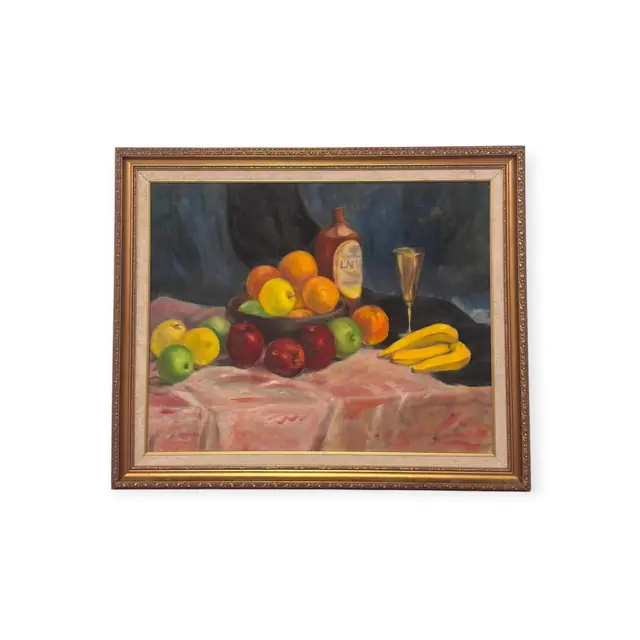
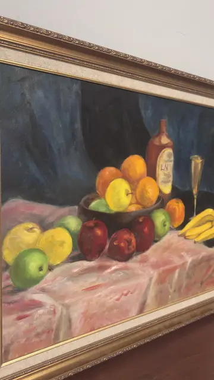
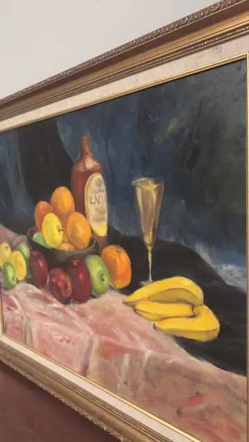

Paintings & Prints
Still Life with Fruit Bowl, Bottle and Bananas, Framed
· late 20th century
Price Upon Request



About the Item
A dark wooden bowl heaped with oranges, a yellow apple and green fruit sits at the centre of a table covered in a heavy rose-pink cloth whose folds are blocked in with broad strokes. Around it: three red apples and a green apple in front, a bunch of yellow bananas to the right, a slender gold champagne flute, and a squat brown bottle with a pale label whose lettering dissolves into brushwork. Behind everything hangs a curtain of deep midnight blue and black, giving the warm fruit a dramatic lift. The handling is soft and painterly, with visible brush marks and no fussy detail. Medium: oil on canvas. Condition: No tears, losses or craquelure visible; the linen liner is clean. Some flash glare across the darker passages.
Details
- Creation Year:
- late 20th century
- Dimensions:
- Height: 27.65 in (70.23 cm)
Width: 33.1 in (84.07 cm)
outside of frame - Medium:
- oil on canvas
- Period:
- 20Th
- Condition:
- Offered in the condition shown in the photographs.
- Reference Number:
- VO-127
- Documentation:
- no certificate photographed